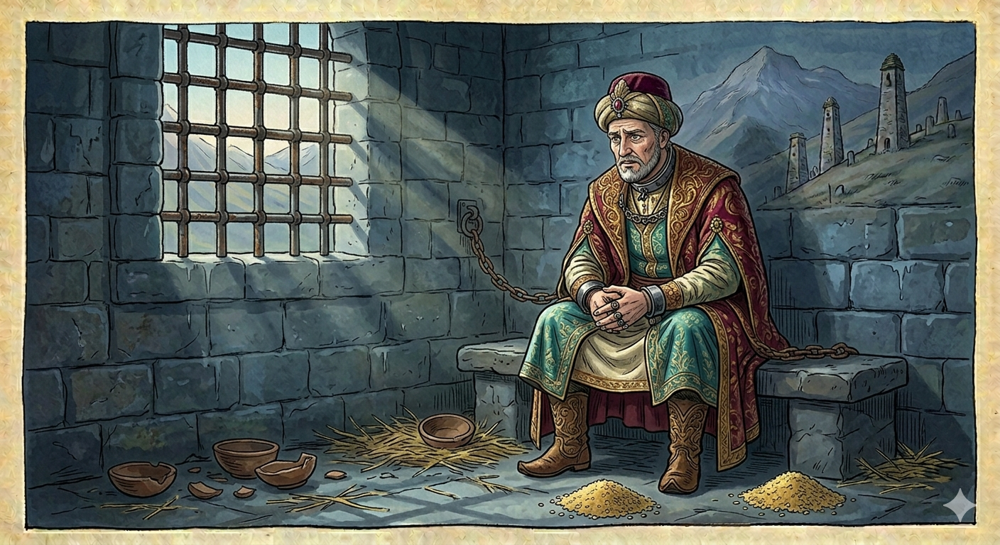

И.А. Дахкильгов. Хьехаме дувцарш - поучительные рассказы-притчи.
И.А. Дахкильгов. Хьехаме дувцарш - поучительные рассказы-притчи. Из ингушского фольклора.

Кхел нийса хила йоагӀа
Цкъа Маддана базар тӀа цӀи йолча наьха къонахчо къоал даь хиннад. Лаьца чу а велла, кхел Ӏохоаяьй. Цо соцадаьд, къуна кулг дӀадаккха аьнна. ТӀаккха баха хиннаб, йоах, Мохьмад-пайхамар волча (Далла салам лолда цунна). Дийхад цунга, иштта тоам боаца гӀулакх хиннад, цӀи йолча наьха саг ва, цудухьа из кхел йохаю ялара Ӏа, аьнна. ТӀаккха аьннад, йоах, Мохьмад-пайхамара: "Миска саг хилча, кхел ше ма йоаггӀа а еш, цӀи йолча наьхах хилча, кхел харцахьа а еш дола хабар оаш сона тӀа хӀана дахь? Мискачо ший моцалла де а тарлора из къоал, хӀаьта оаш вувцаш вола саг торо йолаш ше воллашехьа къоалага ваьнна ма хиннавий ший цӀаьрматалах. Цунна-м шаккхе а кулг дӀадаккха доагӀар! Дола, дӀадовла сона гучара, кхел йохаергьяц аз. Кхел нийса хила йоагӀа".
РУССКИЙ
Суд должен быть справедливым
Некий именитый человек на мединском базаре совершил кражу. Посадили его в темницу и стали вершить суд. Постановили отрубить ему кисть руки. Нашлись ходатаи. Они побежали к пророку Мухаммеду и попросили его отменить это решение суда. При этом они сослались на то, что этот вор – знатного происхождения. Пророк их упрекнул: - По-вашему, если бедный человек, то суд над ним надо вершить по справедливости, а если именитый, то нет? Бедный, может, совершил бы кражу с голоду, а этот именитый человек совершил ее из жадности. Да ему полагалось бы отрубить не одну, а обе кисти рук. Идите от меня, я не отменю решение суда. Суд должен быть справедливым.
ENGLISH
НОХЧИЙН
ПОГОВОРКИ